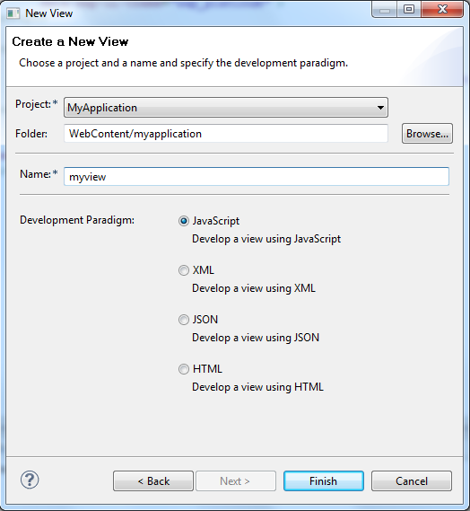

Creating a SAPUI5 Application View
This page explains how to create a view which follows the UI5 Model-View-Controller (MVC) pattern.
Prerequisites
- You have installed the SAPUI5 Application Development feature in your Eclipse installation.
- You have created a SAPUI5 Application using the SAPUI5 Application Development Tools, see Creating a SAPUI5 Application Project.
Step 1: Start View Wizard
You can start the "New SAPUI5 Application View" wizard via New → Other… → SAPUI5 Application Development → View:

Step 2: Fill view related data
- choose a SAPUI5 Application Project in which the view should be created
- select a folder in which the view should be created (defaulted with WebContent/<application name>)
- provide a view name
- choose the development paradigm (either JavaScript or XML view or JSON or HTML view)

Result
After finishing the wizard
- inside the chosen SAPUI5 Application a view is created in the specified folder:
- <viewname>.view.js in case of JavaScript view
- <viewname>.view.xml in case of XML view
- <viewname>.view.json in case of JSON view
- <viewname>.view.html in case of HTML view
- if corresponding index.html file contains sap.m lib in the bootstrap (i.e. SAPUI5 Application Project has been created for mobile target device), the view contains coding for instantiating a mobile page control sap.m.Page
- also a controller file <viewname>.controller.js is created containing some draft coding
- for a JavaScript view there is JavaScript code completion for SAPUI5 controls


|
If you rename the view or controller file or move them to a different folder, the coding in the view and controller and in the places where the view is used need to be adapted manually!
|
Integrate new View
If a new view has been created for an existing SAPUI5 application project the view needs to be manually called either e.g. from index.html page or from another view via view nesting.
Behavior
- view can only be created for a SAPUI5 Application Project (which has been created with the SAPUI5 Application Wizard) and not for other kinds of projects
- view name needs to be unique inside the project folder
- if positioned on a project, the project is defaulted as project for the view if it is a SAPUI5 Application Project, if positioned on a folder, the folder's project is defaulted as project for the view if it is a SAPUI5 Application Project and the folder is defaulted (in other cases the folder is defaulted with WebContent/<application name>)
- folder needs to be WebContent/<application name> or sub folder
Example Coding
Please also refer to Model-View-Controller Concept for more details and examples on the MVC concept.
Simple MVC Example
JavaScript view file
createContent : function(oController) { var aControls = []; var oButton = new sap.ui.commons.Button({ id : this.createId("MyButton"), text : "Hello JS View" }); aControls.push(oButton.attachPress(oController.doIt)); return aControls; }
XML view file
<core:View xmlns:core="sap.ui.core" xmlns:mvc="sap.ui.core.mvc" xmlns="sap.ui.commons" controllerName="myapplication.myview" xmlns:html="http://www.w3.org/1999/xhtml"> <Button id="MyButton" text="Hello XML View" press="doIt"/> </core:View>
JSON view file
{ "Type":"sap.ui.core.mvc.JSONView", "controllerName":"myapplication.myview", "content": [{ "Type":"sap.ui.commons.Button", "id":"MyButton", "text":"Hello JSON View", "press":"doIt" }] }
HTML view file
<template data-controller-name="myapplication.myview"> <div data-sap-ui-type="sap.ui.commons.Button" id="MyButton" data-text="Hello HTML View" data-press="doIt"></div> </template>
controller file
doIt : function(oEvent) { alert(oEvent.getSource().getId() + " does it!"); }
index file for JavaScript example
<script> sap.ui.localResources("myapplication"); var view = sap.ui.view({id: "idmyview1", viewName:"myapplication.myview", type:sap.ui.core.mvc.ViewType.JS}); view.placeAt("content"); </script> ... <div id="content"></div>
index file for XML example
<script> sap.ui.localResources("myapplication"); var view = sap.ui.view({id: "idmyview2", viewName:"myapplication.myview", type:sap.ui.core.mvc.ViewType.XML}); view.placeAt("content"); </script> ... <div id="content"></div>
index file for JSON example
<script> sap.ui.localResources("myapplication"); var view = sap.ui.view({id: "idmyview3", viewName:"myapplication.myview", type:sap.ui.core.mvc.ViewType.JSON}); view.placeAt("content"); </script> ... <div id="content"></div>
index file for HTML example
<script> sap.ui.localResources("myapplication"); var view = sap.ui.view({id: "idmyview4", viewName:"myapplication.myview", type:sap.ui.core.mvc.ViewType.HTML}); view.placeAt("content"); </script> ... <div id="content"></div>
Outline View for Controller and JavaScript View
From UI5 Tools 1.12.5.1 on the generated JavaScript files for the controller and the JavaScript view contain JS Doc for the methods with @memberOf with the benefit that the methods (if they are not commented) appear in the Eclipse Outline View. For already existing controllers and JavaScript views the following JS Doc snippet can be added to each method to make the Eclipse Outline View work (e.g. for view or controller name "myapplication.myview"):
/**
* @memberOf myapplication.myview
*/